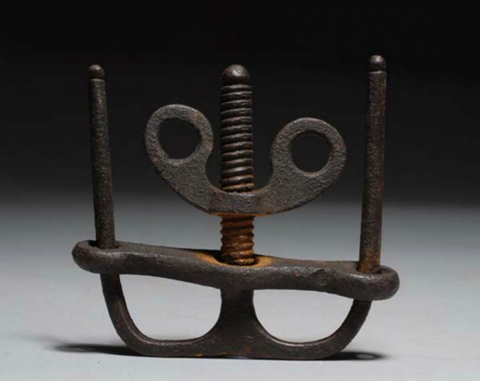

Hüvelyikujj-csavar
A hüvelykujj-csavar olyan kínzóeszköz volt, amely megbénít, esetleg megrongál, de életben hagy, hogy elmondhassa társainak az ellenség hatalmát.
A középkor folyamán az uralkodók, a hadseregek és a vallási szervezetek minden szükséges eszközt alkalmaztak a hatalom fenntartásához. Ezen eszközök közé tartozott a gyanúsítottak kínzása a vallomások kinyerése érdekében. Az egyik ilyen kínzási módszer egy hüvelykujj-csavar volt, egy kicsi és egyszerű eszköz, amely lassan összezúzta mindkét hüvelykujját.
Ha ez nem lenne elég, néha kis méretű szegecsekkel és pengékkel is ellátták a szerkezetet.